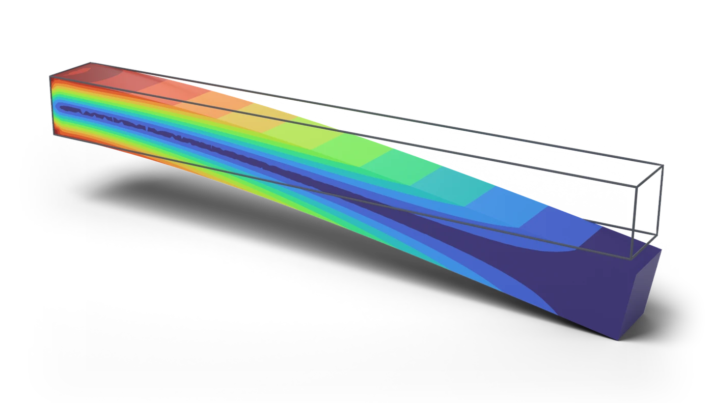

<title>Verified Simulation Portfolio</title>
<meta name="claude:viewport-fit-sides" content="cover">
<link rel="preconnect" href="https://fonts.googleapis.com">
<link rel="preconnect" href="https://fonts.gstatic.com" crossorigin>
<link rel="stylesheet" href="https://fonts.googleapis.com/css2?family=Archivo:wdth,wght@62..125,400..800&family=JetBrains+Mono:wght@400;500&family=Source+Sans+3:ital,wght@0,400;0,600;1,400&display=swap">
<style>
/* Layout: a solver viewport opens the page (real renders, legends in the CAE convention, the render checks as the status line); then the task loop, the agent's procedures, a filterable case gallery, findings, and the full study sheets in one reading column. */
:root {
  --bg: #eef1f5;
  --surface: #ffffff;
  --ink: #0e1621;
  --ink-2: #4a5766;
  --ink-3: #788596;
  --rule: #d5dce5;
  --accent: #2346c4;
  --accent-soft: #e4e9fb;
  --hot: #c9461a;
  --pass: #157447; --pass-bg: #e0f1e7;
  --fail: #b0381a; --fail-bg: #fbe6df;
  --warn: #855f00; --warn-bg: #f9efd6;
  --plate: #fcfcfb;
  --vp-top: #121d33; --vp-bot: #5a7193; --vp-ink: #edf1f8; --vp-ink-2: #b4c1d6; --vp-line: rgba(237, 241, 248, 0.16);
  --term-bg: #0f1620; --term-ink: #d9e1ea; --term-dim: #7f8c9d; --term-pass: #7fd6a2; --term-fail: #ff9b7b; --term-line: #223042;
  --font-display: "Archivo", "Arial Narrow", system-ui, sans-serif;
  --font-body: "Source Sans 3", "Segoe UI", system-ui, -apple-system, sans-serif;
  --font-data: "JetBrains Mono", ui-monospace, "Cascadia Mono", Consolas, monospace;
  --radius: 4px;
}
@media (prefers-color-scheme: dark) {
  :root:not([data-theme="light"]) {
    --bg: #0b1016; --surface: #121a24; --ink: #e8edf3; --ink-2: #a2b0bf; --ink-3: #6e7c8c; --rule: #233041;
    --accent: #8fa9ff; --accent-soft: #1b2645; --hot: #ff8d5f;
    --pass: #7fd6a2; --pass-bg: #14301f; --fail: #ff9b7b; --fail-bg: #3a1e16; --warn: #e9c46a; --warn-bg: #33290f;
    color-scheme: dark;
  }
}
:root[data-theme="dark"] {
  --bg: #0b1016; --surface: #121a24; --ink: #e8edf3; --ink-2: #a2b0bf; --ink-3: #6e7c8c; --rule: #233041;
  --accent: #8fa9ff; --accent-soft: #1b2645; --hot: #ff8d5f;
  --pass: #7fd6a2; --pass-bg: #14301f; --fail: #ff9b7b; --fail-bg: #3a1e16; --warn: #e9c46a; --warn-bg: #33290f;
  color-scheme: dark;
}

* { box-sizing: border-box; }
html { scroll-behavior: smooth; }
@media (prefers-reduced-motion: reduce) { html { scroll-behavior: auto; } *, *::before, *::after { transition: none !important; animation: none !important; } }
body {
  background: var(--bg); color: var(--ink);
  font-family: var(--font-body); font-size: 17px; line-height: 1.6;
  padding-left: max(16px, env(safe-area-inset-left, 0px));
  padding-right: max(16px, env(safe-area-inset-right, 0px));
  padding-block: 0 72px;
}
body::before { content: ""; position: fixed; inset: 0 0 auto; height: env(safe-area-inset-top, 0px); z-index: 10; background: var(--bg); }
.wrap { max-width: 1180px; margin-inline: auto; }
.read { max-width: 820px; margin-inline: auto; }
h1, h2, h3 { font-family: var(--font-display); text-wrap: balance; margin: 0; line-height: 1.1; }
p { margin: 0; }
a { color: var(--accent); text-underline-offset: 3px; }
:focus-visible { outline: 2px solid var(--accent); outline-offset: 3px; border-radius: 2px; }
.eyebrow, .label {
  font-family: var(--font-data); font-size: 0.74rem; letter-spacing: 0.1em; text-transform: uppercase; color: var(--ink-2);
}
code { font-family: var(--font-data); font-size: 0.85em; }

/* ------------------------------------------------------------- top bar */
.topbar {
  position: sticky; top: env(safe-area-inset-top, 0px); z-index: 9;
  background: color-mix(in srgb, var(--bg) 88%, transparent);
  backdrop-filter: blur(10px); -webkit-backdrop-filter: blur(10px);
  border-bottom: 1px solid var(--rule);
  margin-left: calc(-1 * max(16px, env(safe-area-inset-left, 0px)));
  margin-right: calc(-1 * max(16px, env(safe-area-inset-right, 0px)));
  padding-left: max(16px, env(safe-area-inset-left, 0px));
  padding-right: max(16px, env(safe-area-inset-right, 0px));
}
.topbar .wrap { display: flex; align-items: center; justify-content: space-between; gap: 16px; min-height: 52px; }
.brand { font-family: var(--font-display); font-weight: 700; font-stretch: 110%; font-size: 0.98rem; letter-spacing: 0.01em; color: var(--ink); text-decoration: none; display: flex; align-items: center; gap: 10px; white-space: nowrap; }
.brand-mark { width: 22px; height: 12px; display: grid; grid-template-columns: repeat(6, 1fr); border-radius: 2px; overflow: hidden; }
.brand-mark i { display: block; }
.topnav { display: flex; gap: 4px; overflow-x: auto; scrollbar-width: none; }
.topnav a { font-size: 0.9rem; color: var(--ink-2); text-decoration: none; padding: 6px 10px; border-radius: var(--radius); white-space: nowrap; }
.topnav a:hover { color: var(--ink); background: var(--accent-soft); }
@media (max-width: 640px) { .topnav a:nth-child(n+3) { display: none; } }

/* ------------------------------------------------------------- hero */
.hero { padding-block: clamp(32px, 5vw, 64px) 28px; display: grid; grid-template-columns: minmax(0, 1fr) auto; gap: 22px 56px; align-items: end; }
.hero-text { display: grid; gap: 20px; min-width: 0; }
@media (max-width: 900px) { .hero { grid-template-columns: 1fr; } }
.hero h1 {
  font-size: clamp(2.5rem, 6.4vw, 5rem); font-weight: 800; font-stretch: 112%;
  letter-spacing: -0.025em; line-height: 0.98; max-width: 14ch;
}
.hero h1 em { font-style: normal; color: var(--accent); }
.lede { font-size: clamp(1.08rem, 1.6vw, 1.28rem); color: var(--ink-2); max-width: 62ch; line-height: 1.55; }
.lede b { color: var(--ink); font-weight: 600; }
.stats { display: grid; grid-template-columns: repeat(2, auto); gap: 18px 40px; margin: 0; padding: 0 0 6px; }
@media (max-width: 900px) { .stats { grid-template-columns: repeat(4, auto); justify-content: start; } }
@media (max-width: 560px) { .stats { grid-template-columns: repeat(2, auto); } }
.stats div { display: grid; gap: 0; }
.stats dt { order: 2; font-family: var(--font-data); font-size: 0.72rem; letter-spacing: 0.08em; text-transform: uppercase; color: var(--ink-3); }
.stats dd { order: 1; margin: 0; font-family: var(--font-display); font-weight: 800; font-stretch: 110%; font-size: clamp(1.7rem, 3vw, 2.6rem); font-variant-numeric: tabular-nums; line-height: 1.2; }

/* ------------------------------------------------------------- viewport */
.viewport { display: grid; gap: 12px; }
.vp {
  position: relative; border-radius: 6px; overflow: hidden; color: var(--vp-ink);
  background: linear-gradient(180deg, var(--vp-top) 0%, var(--vp-bot) 100%);
  box-shadow: 0 1px 0 rgba(255,255,255,0.06) inset, 0 24px 48px -28px rgba(10, 20, 40, 0.55);
  display: grid; grid-template-columns: 190px minmax(0, 1fr); grid-template-rows: minmax(0, 1fr) auto;
  min-height: clamp(360px, 52vw, 620px);
}
.vp::after { /* faint viewport grid */
  content: ""; position: absolute; inset: 0; pointer-events: none;
  background-image: linear-gradient(var(--vp-line) 1px, transparent 1px), linear-gradient(90deg, var(--vp-line) 1px, transparent 1px);
  background-size: 64px 64px; opacity: 0.18; mask-image: linear-gradient(180deg, transparent, #000 30%, #000 70%, transparent);
}
.legend { padding: 20px 0 16px 20px; display: grid; align-content: start; gap: 10px; position: relative; z-index: 1; }
.legend-title { font-family: var(--font-data); font-size: 0.8rem; line-height: 1.35; }
.legend-title small { display: block; color: var(--vp-ink-2); font-size: 0.72rem; }
.legend-body { display: grid; grid-template-columns: 22px auto; gap: 8px; }
.swatches { display: grid; border: 1px solid rgba(255,255,255,0.35); }
.swatches i { display: block; height: clamp(14px, 1.7vw, 19px); transition: transform 0.45s cubic-bezier(.2,.7,.2,1); transform-origin: left; }
.vp.switching .swatches i { transform: scaleX(0.55); }
.ticks { position: relative; font-family: var(--font-data); font-size: 0.7rem; color: var(--vp-ink); font-variant-numeric: tabular-nums; min-width: 9ch; }
.ticks span { position: absolute; left: 0; transform: translateY(-50%); white-space: nowrap; }
.stage { position: relative; z-index: 1; display: grid; place-items: center; padding: 20px 28px 8px 8px; min-width: 0; }
.stage img { max-width: 100%; max-height: clamp(280px, 44vw, 520px); width: auto; height: auto; transition: opacity 0.35s ease, transform 0.5s cubic-bezier(.2,.7,.2,1); filter: drop-shadow(0 18px 24px rgba(0, 8, 20, 0.35)); }
.vp.switching .stage img { opacity: 0; transform: translateY(6px) scale(0.985); }
.triad { position: absolute; left: 4px; bottom: 6px; width: 54px; height: 54px; opacity: 0.85; }
.status {
  grid-column: 1 / -1; position: relative; z-index: 1;
  font-family: var(--font-data); font-size: 0.74rem; line-height: 1.6; color: var(--vp-ink-2);
  padding: 10px 20px 14px; border-top: 1px solid var(--vp-line); background: rgba(8, 14, 26, 0.28);
  display: grid; gap: 1px;
}
.status b { color: var(--vp-ink); font-weight: 500; }
.status .chk { color: #9fe3b9; }
.tabs { display: grid; grid-template-columns: repeat(6, minmax(0, 1fr)); gap: 8px; }
@media (max-width: 1100px) { .tabs { grid-template-columns: repeat(3, minmax(0, 1fr)); } }
.tabs button {
  font: inherit; text-align: left; cursor: pointer; display: grid; gap: 2px; min-width: 0;
  padding: 10px 14px; border-radius: var(--radius); border: 1px solid var(--rule); background: var(--surface); color: var(--ink);
}
.tabs button:hover { border-color: var(--accent); }
.tabs button[aria-selected="true"] { border-color: var(--accent); box-shadow: inset 0 -3px 0 var(--accent); }
.tab-k { font-family: var(--font-data); font-size: 0.7rem; letter-spacing: 0.1em; text-transform: uppercase; color: var(--accent); }
.tab-v { font-size: 0.92rem; font-weight: 600; overflow: hidden; text-overflow: ellipsis; white-space: nowrap; }
.vp-note { font-size: 0.9rem; color: var(--ink-2); max-width: 80ch; }
@media (max-width: 720px) {
  .vp { grid-template-columns: 1fr; grid-template-rows: auto minmax(0, 1fr) auto; min-height: 0; }
  .legend { padding: 16px 16px 0; }
  .legend-body { grid-template-columns: 1fr; gap: 4px; }
  .swatches { grid-auto-flow: column; grid-auto-columns: 1fr; direction: rtl; }
  .swatches i { height: 12px; }
  .ticks { height: 1.1em; }
  .ticks span { transform: none; }
  .ticks span:not(:first-child):not(:last-child) { display: none; }
  .ticks span:first-child { left: auto; right: 0; top: 0 !important; }
  .ticks span:last-child { left: 0; top: 0 !important; }
  .stage { padding: 8px 12px 12px; }
  .stage img { max-height: 300px; }
  .triad { display: none; }
  .tabs { grid-template-columns: repeat(2, minmax(0, 1fr)); }
}

/* ------------------------------------------------------------- sections */
.band { padding-block: clamp(56px, 8vw, 104px) 0; display: grid; gap: 28px; scroll-margin-top: 64px; }
.band-head { display: grid; gap: 10px; max-width: 760px; }
.band-head h2 { font-size: clamp(1.9rem, 3.6vw, 2.8rem); font-weight: 750; font-stretch: 108%; letter-spacing: -0.015em; }
.band-head p { color: var(--ink-2); font-size: 1.06rem; max-width: 64ch; }

/* task loop */
.loop { display: grid; grid-template-columns: minmax(0, 1fr) minmax(0, 1.1fr); gap: 28px; align-items: start; }
.steps { list-style: none; margin: 0; padding: 0; display: grid; gap: 0; counter-reset: step; border-top: 1px solid var(--rule); }
.steps li { display: grid; grid-template-columns: 3rem minmax(0, 1fr); gap: 4px 12px; padding: 16px 0; border-bottom: 1px solid var(--rule); }
.steps li::before { counter-increment: step; content: counter(step, decimal-leading-zero); grid-row: span 2; font-family: var(--font-data); font-size: 0.85rem; color: var(--accent); padding-top: 4px; }
.steps b { font-family: var(--font-display); font-size: 1.18rem; font-weight: 700; font-stretch: 105%; }
.steps span { color: var(--ink-2); font-size: 0.98rem; }
.term { background: var(--term-bg); color: var(--term-ink); border-radius: 6px; overflow: hidden; font-family: var(--font-data); font-size: 0.8rem; line-height: 1.7; border: 1px solid var(--term-line); }
.term-bar { display: flex; align-items: center; gap: 7px; padding: 10px 14px; border-bottom: 1px solid var(--term-line); color: var(--term-dim); }
.term-bar i { width: 9px; height: 9px; border-radius: 50%; background: var(--term-line); display: inline-block; }
.term-bar span { margin-left: 8px; overflow: hidden; text-overflow: ellipsis; white-space: nowrap; }
.term pre { margin: 0; padding: 14px 16px 16px; overflow-x: auto; white-space: pre; }
.term .p { color: var(--term-dim); }
.t-row { display: block; }
.t-row > span { display: inline-block; }
.t-id { width: 27ch; } .t-pass, .t-fail { width: 6ch; } .t-num { width: 11ch; }
.t-id { color: var(--term-ink); }
.t-pass { color: var(--term-pass); }
.t-fail { color: var(--term-fail); }
.t-num, .t-tol { color: var(--term-dim); font-variant-numeric: tabular-nums; }
.term .verdict { color: var(--term-fail); }
.term .ok { color: var(--term-pass); }
@media (max-width: 860px) { .loop { grid-template-columns: 1fr; } }

/* agent skills */
.skills { display: grid; grid-template-columns: repeat(3, minmax(0, 1fr)); gap: 1px; background: var(--rule); border: 1px solid var(--rule); border-radius: 6px; overflow: hidden; }
.skill { background: var(--surface); padding: 18px 20px; display: grid; gap: 6px; align-content: start; min-width: 0; }
.skill code { font-size: 0.82rem; color: var(--accent); }
.skill b { font-family: var(--font-display); font-weight: 700; font-size: 1.08rem; }
.skill p { color: var(--ink-2); font-size: 0.95rem; }
.rules { display: flex; flex-wrap: wrap; gap: 8px 10px; list-style: none; margin: 0; padding: 0; }
.rules li { font-size: 0.92rem; padding: 6px 12px; border: 1px solid var(--rule); border-radius: 999px; background: var(--surface); }
.rules li::before { content: "✓"; color: var(--pass); margin-right: 8px; font-weight: 600; }
@media (max-width: 900px) { .skills { grid-template-columns: repeat(2, minmax(0, 1fr)); } }
@media (max-width: 560px) { .skills { grid-template-columns: 1fr; } }

/* gallery */
.filters { display: flex; flex-wrap: wrap; gap: 8px; }
.filters button { font: inherit; font-size: 0.9rem; cursor: pointer; padding: 6px 14px; border-radius: 999px; border: 1px solid var(--rule); background: var(--surface); color: var(--ink-2); }
.filters button:hover { color: var(--ink); border-color: var(--ink-3); }
.filters button[aria-pressed="true"] { background: var(--ink); border-color: var(--ink); color: var(--bg); }
.gallery { display: grid; grid-template-columns: repeat(3, minmax(0, 1fr)); gap: 18px; }
.card { display: grid; grid-template-rows: auto 1fr; background: var(--surface); border: 1px solid var(--rule); border-radius: 6px; overflow: hidden; color: var(--ink); text-decoration: none; transition: transform 0.25s ease, box-shadow 0.25s ease, border-color 0.25s; }
.card:hover { transform: translateY(-3px); border-color: var(--accent); box-shadow: 0 18px 32px -24px rgba(20, 40, 90, 0.5); }
.thumb { display: block; aspect-ratio: 16 / 10; background: var(--plate); border-bottom: 1px solid var(--rule); }
.thumb img { width: 100%; height: 100%; object-fit: contain; display: block; }
.card-body { display: grid; gap: 8px; padding: 16px 18px 18px; align-content: start; }
.meta { display: flex; gap: 10px; font-family: var(--font-data); font-size: 0.72rem; letter-spacing: 0.08em; text-transform: uppercase; color: var(--ink-3); }
.meta .no { color: var(--accent); }
.card-title { font-family: var(--font-display); font-weight: 700; font-stretch: 104%; font-size: 1.2rem; line-height: 1.2; }
.card-answer { color: var(--ink-2); font-size: 0.97rem; line-height: 1.5; }
.card-foot { display: flex; flex-wrap: wrap; justify-content: space-between; align-items: center; gap: 8px; margin-top: 4px; }
.tools { font-family: var(--font-data); font-size: 0.72rem; color: var(--ink-3); }
.v { font-family: var(--font-data); font-size: 0.72rem; padding: 2px 8px; border-radius: 999px; }
.v-pass { color: var(--pass); background: var(--pass-bg); }
.v-fail { color: var(--fail); background: var(--fail-bg); }
.v-mixed { color: var(--warn); background: var(--warn-bg); }
.card.featured { grid-column: 1 / -1; grid-template-columns: minmax(0, 1.15fr) minmax(0, 1fr); grid-template-rows: auto; }
.card.featured .thumb { border-bottom: 0; border-right: 1px solid var(--rule); }
.card.featured .card-body { align-content: center; padding: 24px 28px; gap: 10px; }
.card.featured .card-title { font-size: 1.6rem; }
.card.featured .card-answer { font-size: 1.05rem; }
.card.featured .meta .no + span { color: var(--hot); }
@media (max-width: 960px) { .gallery { grid-template-columns: repeat(2, minmax(0, 1fr)); } }
@media (max-width: 700px) { .card.featured { grid-template-columns: 1fr; } .card.featured .thumb { border-right: 0; border-bottom: 1px solid var(--rule); } }
@media (max-width: 600px) { .gallery { grid-template-columns: 1fr; } }

/* findings */
.findings { display: grid; grid-template-columns: repeat(2, minmax(0, 1fr)); gap: 18px; }
.findings .finding:first-child { grid-column: 1 / -1; }
.finding { background: var(--surface); border: 1px solid var(--rule); border-top: 3px solid var(--hot); border-radius: 2px; padding: 20px 22px 22px; display: grid; gap: 10px; align-content: start; }
.finding .label { color: var(--hot); }
.finding h3 { font-size: 1.28rem; font-weight: 700; font-stretch: 104%; line-height: 1.2; }
.finding p { color: var(--ink-2); font-size: 0.98rem; }
.finding a { font-size: 0.92rem; font-weight: 600; }
@media (max-width: 760px) { .findings { grid-template-columns: 1fr; } }

/* capability table */
.table-wrap { overflow-x: auto; border: 1px solid var(--rule); border-radius: 6px; background: var(--surface); }
table { border-collapse: collapse; width: 100%; font-size: 0.94rem; min-width: 600px; }
th, td { text-align: left; padding: 11px 16px; border-bottom: 1px solid var(--rule); vertical-align: top; }
tr:last-child td { border-bottom: 0; }
th { font-family: var(--font-data); font-weight: 500; font-size: 0.72rem; letter-spacing: 0.08em; text-transform: uppercase; color: var(--ink-3); }
td:nth-child(2) { font-family: var(--font-data); font-size: 0.8rem; color: var(--ink-2); }

/* ------------------------------------------------------------- study sheets (existing content) */
.studies { display: grid; gap: 28px; }
h2.discipline {
  font-family: var(--font-data); font-size: 0.8rem; font-weight: 500; letter-spacing: 0.12em; text-transform: uppercase;
  color: var(--accent); display: flex; align-items: center; gap: 14px; margin-top: 28px;
}
h2.discipline::after { content: ""; flex: 1; height: 1px; background: var(--rule); }
section.study {
  background: var(--surface); border: 1px solid var(--rule); border-radius: 6px;
  padding: clamp(20px, 3.5vw, 36px); display: grid; gap: 18px; scroll-margin-top: 68px; min-width: 0;
}
.study-head { display: grid; gap: 6px; padding-bottom: 14px; border-bottom: 1px solid var(--rule); }
.study-head .label { color: var(--accent); }
.study-head h2 { font-size: clamp(1.5rem, 2.8vw, 2rem); font-weight: 750; font-stretch: 106%; letter-spacing: -0.01em; }
section.study > p, ul.proof li, .caught li { max-width: 70ch; }
.study h3 { font-family: var(--font-display); font-size: 1.05rem; font-weight: 700; margin-top: 4px; }
.answer { background: var(--accent-soft); border-radius: var(--radius); padding: 16px 20px; display: grid; gap: 10px; }
.chips { display: flex; flex-wrap: wrap; gap: 8px; }
.chip { font-family: var(--font-data); font-size: 0.76rem; padding: 3px 10px; border-radius: 999px; white-space: nowrap; }
.chip.pass { color: var(--pass); background: var(--pass-bg); }
.chip.fail { color: var(--fail); background: var(--fail-bg); }
.chip.warn { color: var(--warn); background: var(--warn-bg); }
ul.proof { margin: 0; padding-left: 1.15rem; display: grid; gap: 9px; }
ul.proof li::marker { color: var(--accent); }
figure { margin: 0; display: grid; gap: 8px; min-width: 0; }
figure .plate { background: var(--plate); border: 1px solid var(--rule); border-radius: var(--radius); padding: 8px; }
figure img { display: block; width: 100%; height: auto; }
figcaption { font-size: 0.88rem; color: var(--ink-2); max-width: 72ch; }
.figs-2 { display: grid; grid-template-columns: repeat(2, minmax(0, 1fr)); gap: 16px; }
@media (max-width: 720px) { .figs-2 { grid-template-columns: 1fr; } }
.caught { border-left: 2px solid var(--hot); padding: 2px 0 2px 18px; display: grid; gap: 8px; }
.caught h3 { color: var(--hot); }
.caught ul { margin: 0; padding-left: 1.1rem; display: grid; gap: 8px; }
.study .table-wrap table { min-width: 520px; }
td.num { font-family: var(--font-data); font-variant-numeric: tabular-nums; white-space: nowrap; }

/* ------------------------------------------------------------- footer */
.foot { display: grid; grid-template-columns: minmax(0, 1.2fr) minmax(0, 1fr); gap: 32px; padding-top: 28px; border-top: 1px solid var(--rule); color: var(--ink-2); font-size: 0.95rem; }
.foot ul { margin: 8px 0 0; padding-left: 1.1rem; display: grid; gap: 6px; }
.toolchain { display: grid; grid-template-columns: auto 1fr; gap: 6px 16px; margin: 8px 0 0; font-size: 0.9rem; }
.toolchain dt { color: var(--ink); font-weight: 600; }
.toolchain dd { margin: 0; font-family: var(--font-data); font-size: 0.8rem; align-self: center; }
@media (max-width: 760px) { .foot { grid-template-columns: 1fr; } }
</style>

<nav class="topbar" aria-label="Page">
  <div class="wrap">
    <a class="brand" href="#top"><span class="brand-mark" aria-hidden="true"><i style="background:#30123b"></i><i style="background:#4686fb"></i><i style="background:#1ae4b6"></i><i style="background:#a2fc3c"></i><i style="background:#fb8022"></i><i style="background:#7a0403"></i></span>Verified Simulation</a>
    <div class="topnav">
      <a href="#loop">Method</a>
      <a href="#studies">Studies</a>
      <a href="#agent">Agent workflow</a>
      <a href="#tasks">Tasks</a>
      <a href="#findings">Findings</a>
      <a href="#capabilities">Capabilities</a>
    </div>
  </div>
</nav>

<main id="top">
  <header class="hero wrap">
    <div class="hero-text">
    <p class="eyebrow">Mechanical engineering · simulation and verification portfolio</p>
    <h1>Simulation answers <em>you can check.</em></h1>
    <p class="lede">Ten worked studies across <b>structures, contact, vibration, fatigue, fluids, heat transfer and vehicle dynamics</b>. Each one turns written requirements into a model, runs a real solver, and checks the result against something independent before it gives a verdict. Everything runs on open-source tools, driven by a coding agent through written procedures.</p>
    </div>
    <dl class="stats">
      <div><dt>automated checks</dt><dd>1128</dd></div>
      <div><dt>saved evidence runs</dt><dd>34</dd></div>
      <div><dt>open-source solvers and tools</dt><dd>8</dd></div>
      <div><dt>paid licences</dt><dd>0</dd></div>
    </dl>
  </header>

  <section class="viewport wrap" aria-label="Result viewer">
    <div class="vp" id="vp" role="tabpanel" aria-labelledby="tab-cantilever">
      <div class="legend">
        <div class="legend-title" id="lg-title">S, Mises<small>MPa</small></div>
        <div class="legend-body"><div class="swatches" id="lg-sw"></div><div class="ticks" id="lg-ticks"></div></div>
      </div>
      <div class="stage">
      <svg class="triad" viewBox="0 0 54 54" aria-hidden="true">
        <g stroke-width="1.6" fill="none" stroke-linecap="round">
          <line x1="14" y1="40" x2="44" y2="46" stroke="#ff8f6b"/><line x1="14" y1="40" x2="34" y2="28" stroke="#8fe3a8"/><line x1="14" y1="40" x2="14" y2="8" stroke="#8fb4ff"/>
        </g>
        <g font-family="JetBrains Mono, monospace" font-size="8" fill="#edf1f8"><text x="46" y="50">X</text><text x="36" y="27">Y</text><text x="11" y="6">Z</text></g>
      </svg>
      </div>
      <div class="status" id="vp-status" aria-live="polite"></div>
    </div>
    <div class="tabs" role="tablist" aria-label="Choose a result">
{{TABS}}
    </div>
    <p class="vp-note">Every result image is rendered in Blender from the solver's own output, and published only if it passes two checks. The rendered surface must enclose the part's design volume, so no faces are missing or flipped. Every coloured pixel must match the legend, so the lighting hasn't shifted the contours.</p>
  </section>

  <section class="band wrap" id="loop" aria-labelledby="loop-title">
    <div class="band-head">
      <p class="eyebrow">Method</p>
      <h2 id="loop-title">From a requirement to a verdict</h2>
      <p>Every study follows the same loop. The tolerances and my predictions are written down before the first run, so a pass can't come from moving the goalposts.</p>
    </div>
    <div class="loop">
      <ol class="steps">
        <li><b>Frame</b><span>Turn the question into measurable requirements, input ranges, assumptions to check, and acceptance tolerances, in a case file.</span></li>
        <li><b>Model</b><span>Build geometry, mesh, materials, loads and solver inputs in code: CadQuery, Gmsh, CalculiX, OpenFOAM, SciPy, Modelica.</span></li>
        <li><b>Check</b><span>Compare every reported number with something independent: an exact solution, a conservation law, a handbook value, a second tool, and mesh or time-step convergence.</span></li>
        <li><b>Report</b><span>Trace each requirement to its result, its checks and the evidence files. If an assumption broke, the verdict is withheld rather than guessed.</span></li>
      </ol>
      <div class="term" role="figure" aria-label="Real output from the quarter-car lift-off run">
        <div class="term-bar"><i></i><i></i><i></i><span>python -m harness pipeline cases/qc_bump_liftoff.toml</span></div>
<pre><span class="p">run   </span>p00 · damping 600 N·s/m · tire_model = liftoff
<span class="p">solve </span>DOP853 · 2 lift-offs, 2 touchdowns located exactly
<span class="p">verify</span>
{{TERMINAL}}<span class="p">req   </span>REQ-QB1 peak body accel   5.188 m/s²  ≤ 4.0   <span class="verdict">FAIL</span>
<span class="p">req   </span>REQ-QB3 tire load swing   1.595       ≤ 0.7   <span class="verdict">FAIL</span>
<span class="p">      </span><span class="ok">VERIFICATION PASS</span> · 30/30 checks across the sweep
<span class="p">      </span>verdict: <span class="verdict">FAIL</span>, pending human review</pre>
      </div>
    </div>
  </section>

  <section class="band wrap" id="studies" aria-labelledby="studies-title">
    <div class="band-head">
      <p class="eyebrow">Case studies</p>
      <h2 id="studies-title">Eleven studies, each ending in a clear answer or a clearly withheld one</h2>
      <p>The problems are synthetic, so no client data is involved. Every number comes from a saved run that reproduces from its recorded inputs with one command.</p>
    </div>
    <div class="filters" role="group" aria-label="Filter by discipline">
      <button type="button" aria-pressed="true" data-f="all">All</button>
      <button type="button" aria-pressed="false" data-f="struct">Structures and vibration</button>
      <button type="button" aria-pressed="false" data-f="fluid">Thermal and fluids</button>
      <button type="button" aria-pressed="false" data-f="vehicle">Vehicle dynamics</button>
      <button type="button" aria-pressed="false" data-f="geom">Geometry</button>
      <button type="button" aria-pressed="false" data-f="workflow">Workflow</button>
    </div>
    <div class="gallery" id="gallery">
{{CARDS}}
    </div>
  </section>

  <section class="band wrap" id="agent" aria-labelledby="agent-title">
    <div class="band-head">
      <p class="eyebrow">Agent workflow</p>
      <h2 id="agent-title">Run by a coding agent, through written procedures</h2>
      <p>The work is done with Claude Code following six skills I wrote and tested. The skills fix the order of work and the checks. The agent writes and runs the code, and I review the engineering.</p>
    </div>
    <div class="skills">
      <div class="skill"><code>frame-requirements</code><b>Requirements first</b><p>The decision, metrics, input ranges, assumptions with validity checks, tolerances and predictions, all fixed before anything runs.</p></div>
      <div class="skill"><code>build-model</code><b>Model preparation</b><p>File layout, check selection, a smoke test, and failure diagnosis, with reference notes on solver traps found the hard way.</p></div>
      <div class="skill"><code>run-case</code><b>Simulation execution</b><p>Runs a case file and keeps inputs, tool versions, solver logs, results and failures as evidence.</p></div>
      <div class="skill"><code>verify-against-reference</code><b>Verification</b><p>Independent references, conservation, reaction balance, mesh convergence with the Grid Convergence Index, and cross-tool comparison.</p></div>
      <div class="skill"><code>requirements-report</code><b>Review report</b><p>Each requirement traced to its result, checks and evidence, ending in "pending human review".</p></div>
      <div class="skill"><code>render-results</code><b>Result renders</b><p>Blender renders from the solver output, gated by a geometry check and a pixel-level legend-colour check.</p></div>
    </div>
    <ul class="rules" aria-label="Rules the agent works under">
      <li>Never loosens a tolerance to pass</li>
      <li>Keeps failed runs as evidence</li>
      <li>Writes predictions before evidence runs</li>
      <li>Withholds a verdict when an assumption breaks</li>
      <li>Leaves acceptance to a person</li>
    </ul>
  </section>

  <section class="band wrap" id="tasks" aria-labelledby="tasks-title">
    <div class="band-head">
      <p class="eyebrow">Evaluation tasks</p>
      <h2 id="tasks-title">Tasks that test whether a solver checks its assumptions</h2>
      <p>Three engineering tasks built from the verified studies, written the way an AI-training or assessment pipeline needs them: a problem statement with a required answer format, a reference solution with evidence, an automated grader, and the traps each task is designed to expose. The graders are tested as well: each gives the reference answer full marks and fails every trap on the criterion it should break.</p>
    </div>
    <div class="loop">
      <div class="skills" style="grid-template-columns: 1fr;">
        <div class="skill"><code>hertz_roller_contact</code><b>Contact stress under a track roller</b><p>Trap: the plain modulus E instead of the combined E*. The peak pressure comes out 35 % high and the verdict flips.</p></div>
        <div class="skill"><code>heated_channel_wall_temperature</code><b>Cold-plate wall temperature</b><p>Trap: assuming fully developed heat transfer when the heated length is shorter than the thermal entry length. Close in value, wrong in method, and the grader catches it.</p></div>
        <div class="skill"><code>cantilever_root_stress</code><b>Bracket stress from a 3D model</b><p>Trap: reporting the stress at a clamped corner, which grows without limit as the mesh is refined, as the design stress. 217 MPa and climbing, against a real 150 MPa.</p></div>
      </div>
      <div class="term" role="figure" aria-label="Real grader output for a trap answer">
        <div class="term-bar"><i></i><i></i><i></i><span>grade(answer)  # heated_channel_wall_temperature, fully developed shortcut</span></div>
<pre><span class="p">answer </span>peak wall 44.20 C, Nu 8.235 (fully developed), limit met
<span class="t-row"><span class="t-id">coolant_rise_K</span><span class="t-pass">PASS</span><span class="t-num">7.2</span><span class="t-tol">ref 7.199 ±0.036</span></span><span class="t-row"><span class="t-id">peak_wall_temperature_C</span><span class="t-fail">FAIL</span><span class="t-num">44.20</span><span class="t-tol">ref 44.047 ±0.10</span></span><span class="t-row"><span class="t-id">nusselt_at_end_of_heating</span><span class="t-fail">FAIL</span><span class="t-num">8.235</span><span class="t-tol">ref 8.343 ±0.05</span></span><span class="t-row"><span class="t-id">wall_limit_met</span><span class="t-pass">PASS</span><span class="t-num">true</span><span class="t-tol">ref true</span></span><span class="p">score  </span><span class="verdict">0.5</span> · right verdict, wrong method: the entry length was never checked</pre>
      </div>
    </div>
  </section>

  <section class="band wrap" id="findings" aria-labelledby="findings-title">
    <div class="band-head">
      <p class="eyebrow">What the checks caught</p>
      <h2 id="findings-title">Answers that looked right and weren't</h2>
      <p>In several studies the first model gave a plausible answer that was wrong. These are the cases where the checks paid for themselves.</p>
    </div>
    <div class="findings">
      <article class="finding"><span class="label">Strap · stress concentration</span><h3>A model that converged cleanly to the wrong answer</h3><p>A textbook-perfect mesh study settled 2 % off the handbook. Running an exact case through the same pipeline exposed a solver formulation issue that no amount of mesh refinement would have shown.</p><a href="#strap">Read the study</a></article>
      <article class="finding"><span class="label">Coolant channel · CFD</span><h3>An idealised inlet that reversed the verdict</h3><p>The simple model said the channel passed. It never converged at the inlet corner, and the realistic model fails the pressure budget.</p><a href="#cfd">Read the study</a></article>
      <article class="finding"><span class="label">Quarter car · vehicle dynamics</span><h3>A wheel that left the road</h3><p>Every numerical check passed, but the model was outside its valid range, so the verdict was withheld. The model that check called for, a tire that can lift off, showed the simple one had overstated peak body acceleration by up to 29 %.</p><a href="#suspension">Read the study</a></article>
      <article class="finding"><span class="label">Roller contact · nonlinear FEA</span><h3>The right answer, read from the wrong output</h3><p>Contact pressure taken from the element stresses at the surface read 3.5 to 6.5 % high, and added up to more than the load. The solver's own contact output matched the exact Hertz solution to 0.2 % on the same mesh.</p><a href="#contact">Read the study</a></article>
      <article class="finding"><span class="label">Cantilever · finite elements</span><h3>Elements that made the bracket look too stiff</h3><p>The simplest element type overstated stiffness by up to a third and understated stress by up to 45 %. The checks withheld every one of those results.</p><a href="#fea">Read the study</a></article>
    </div>
  </section>

  <section class="band wrap" id="capabilities" aria-labelledby="caps-title">
    <div class="band-head">
      <p class="eyebrow">Capabilities</p>
      <h2 id="caps-title">What I model, and with which tools</h2>
    </div>
    {{CAPS}}
  </section>

  <section class="band read" aria-label="Case study details">
    <div class="band-head">
      <p class="eyebrow">The studies in full</p>
      <h2>Question, answer, proof</h2>
      <p>Each study states the question, gives the answer first, shows how I know it's right, and says what the checks caught along the way.</p>
    </div>
    <div class="studies">
{{STUDIES}}
    </div>
  </section>

  <footer class="band wrap" aria-label="Limits and toolchain">
    <div class="foot">
      <div>
        <span class="label">Limits of these examples</span>
        <ul>
          <li>The parameters and requirement limits are synthetic. Nothing here is calibrated to a real product.</li>
          <li>The checks show the equations were solved correctly and the models were used within their valid range. Showing that a model matches real hardware needs test data, which these examples don't have.</li>
          <li>Ride comfort is unweighted; a production study would apply ISO 2631 weighting.</li>
          <li>The coolant-channel model covers flow and pressure, not heat transfer. The fin takes the air-side heat-transfer coefficient as an input.</li>
          <li>Every report ends with "pending human review". Accepting a design stays with a person.</li>
        </ul>
      </div>
      <div>
        <span class="label">Toolchain, all open source</span>
        <dl class="toolchain">
          <dt>Python</dt><dd>3.14 · NumPy 2.5 · SciPy 1.18</dd>
          <dt>CalculiX</dt><dd>2.22 · structural, modal, heat transfer</dd>
          <dt>Gmsh</dt><dd>4.15 · scripted meshing from STEP</dd>
          <dt>CadQuery</dt><dd>2.8 · parametric CAD, STEP export</dd>
          <dt>FreeCAD</dt><dd>1.1.4 · headless FEM workbench</dd>
          <dt>OpenFOAM</dt><dd>14 · laminar internal flow, in WSL</dd>
          <dt>OpenModelica</dt><dd>1.26.3 · Modelica Standard Library 4.1</dd>
          <dt>Blender</dt><dd>4.5 LTS · Cycles result renders</dd>
        </dl>
        <p style="margin-top:12px">Every run records its exact inputs, tool versions and code version, and repeats with one command. Evidence reports and case files are available on request.</p>
      </div>
    </div>
  </footer>
</main>

<script>
(() => {
  const VP = {{VP_JSON}};
  const vp = document.getElementById("vp"), img = document.getElementById("vp-img");
  const sw = document.getElementById("lg-sw"), ticks = document.getElementById("lg-ticks");
  const title = document.getElementById("lg-title"), status = document.getElementById("vp-status");
  const tabs = [...document.querySelectorAll('.tabs [role="tab"]')];
  const sci = v => (v < 0 ? "-" : "+") + Math.abs(v).toExponential(3).replace(/e([+-])(\d)$/, "e$10$2");
  const esc = s => s.replace(/[&<>]/g, c => ({ "&": "&amp;", "<": "&lt;", ">": "&gt;" }[c]));
  VP.forEach(v => { const p = new Image(); p.src = v.img; });

  function paint(v) {
    const n = v.bands.length;
    sw.innerHTML = v.bands.slice().reverse().map(c => `<i style="background:${c}"></i>`).join("");
    ticks.innerHTML = Array.from({ length: n + 1 }, (_, i) => {
      const val = v.vmax - (v.vmax - v.vmin) * i / n;
      return `<span style="top:${(100 * i / n).toFixed(3)}%">${sci(val)}</span>`;
    }).join("");
    title.innerHTML = `${esc(v.legend)}<small>${esc(v.unit)}</small>`;
    status.innerHTML = `<b>${esc(v.model)}</b>` + v.lines.map(l => `<span>${esc(l)}</span>`).join("") +
      `<span class="chk">${esc(v.check)}</span>`;
    img.alt = v.model;
  }

  let current = 0;
  function show(i, focus) {
    if (i === current && img.getAttribute("src") === VP[i].img) { paint(VP[i]); return; }
    current = i;
    tabs.forEach((t, k) => { t.setAttribute("aria-selected", k === i ? "true" : "false"); t.tabIndex = k === i ? 0 : -1; });
    vp.setAttribute("aria-labelledby", tabs[i].id);
    if (focus) tabs[i].focus();
    const reduce = window.matchMedia("(prefers-reduced-motion: reduce)").matches;
    if (reduce) { img.src = VP[i].img; paint(VP[i]); return; }
    vp.classList.add("switching");
    setTimeout(() => {
      img.src = VP[i].img; paint(VP[i]);
      const done = () => requestAnimationFrame(() => vp.classList.remove("switching"));
      if (img.complete) done(); else img.onload = done;
    }, 220);
  }
  tabs.forEach((t, k) => {
    t.tabIndex = k === 0 ? 0 : -1;
    t.addEventListener("click", () => show(k));
    t.addEventListener("keydown", e => {
      if (e.key === "ArrowRight" || e.key === "ArrowLeft") {
        e.preventDefault();
        show((current + (e.key === "ArrowRight" ? 1 : tabs.length - 1)) % tabs.length, true);
      }
    });
  });
  paint(VP[0]);

  const btns = [...document.querySelectorAll(".filters button")];
  const cards = [...document.querySelectorAll("#gallery .card")];
  btns.forEach(b => b.addEventListener("click", () => {
    btns.forEach(x => x.setAttribute("aria-pressed", x === b ? "true" : "false"));
    const f = b.dataset.f;
    cards.forEach(c => { c.hidden = !(f === "all" || c.dataset.group === f); });
  }));
})();
</script>
